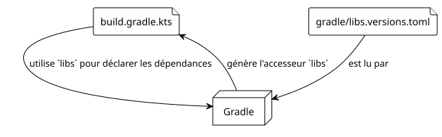
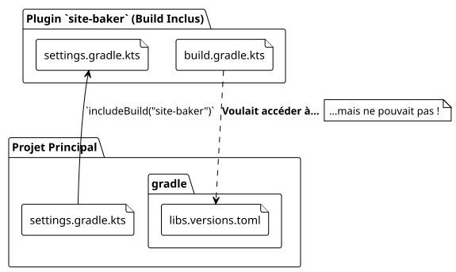

Partage de `libs.versions.toml` dans un Build Composite Gradle
Publié le 27 September 2025
1. Introduction
Dans notre quête pour créer le plugin site-baker, nous avons cherché à maintenir une base de code propre et centralisée. L’une des meilleures pratiques dans l’écosystème Gradle moderne est l’utilisation du catalogue de versions (libs.versions.toml) pour gérer les dépendances. Mais que se passe-t-il lorsque votre projet devient plus complexe, comme un build composite où un build indépendant (notre plugin) doit être inclus dans un autre ?
C’est là que notre aventure a pris un tournant inattendu. Nous voulions que notre plugin site-baker, qui est lui-même un projet Gradle, utilise le même catalogue de versions que notre projet principal. Cet article, le cinquième de notre série, raconte comment nous avons résolu ce défi.
2. 1. Le Catalogue de Versions (libs.versions.toml) : Un Rappel
Le fichier gradle/libs.versions.toml est une fonctionnalité de Gradle qui permet de centraliser les versions et les coordonnées des dépendances de votre projet. Il est généralement structuré en quatre sections :
-
[versions]: Définit des alias pour les numéros de version (ex:kotlin = "1.9.20"). -
[libraries]: Définit des alias pour les dépendances complètes, en utilisant les versions définies ci-dessus (ex:kotlin-stdlib = { module = "org.jetbrains.kotlin:kotlin-stdlib", version.ref = "kotlin" }). -
[bundles]: Regroupe plusieurs bibliothèques sous un seul alias (ex:jackson = ["jackson-core", "jackson-databind"]). -
[plugins]: Définit des alias pour les plugins Gradle.
Une fois défini, Gradle génère automatiquement des accesseurs typés, ce qui rend votre build.gradle.kts beaucoup plus lisible :
dependencies {
// Au lieu de : implementation("org.jetbrains.kotlin:kotlin-stdlib:1.9.20")
implementation(libs.kotlin.stdlib)
}
3. 2. Le Problème : Un Build Composite et Deux Mondes Séparés
Notre structure de projet est un build composite. Le projet principal (thymeleaf.cheroliv.com) inclut le projet du plugin (site-baker) via la commande includeBuild("site-baker") dans le fichier settings.gradle.kts.

Le problème est que, par défaut, un build inclus est un monde séparé. Il a sa propre configuration, son propre cycle de vie, et il ne voit pas le fichier libs.versions.toml du build principal. Notre plugin/build.gradle.kts essayait d’utiliser libs.plugins.kotlin.jvm, mais l’objet libs n’était pas généré à partir du bon fichier TOML, provoquant des erreurs de build.
4. 3. La Solution : Partager la Résolution de Dépendances
Après plusieurs recherches, la solution s’est avérée être une fonctionnalité de Gradle conçue précisément pour ce cas : dependencyResolutionManagement.
Dans le fichier settings.gradle.kts du build inclus (site-baker/settings.gradle.kts), nous pouvons dire à Gradle où trouver le catalogue de versions à utiliser.
Voici la configuration que nous avons ajoutée à site-baker/settings.gradle.kts :
// site-baker/settings.gradle.kts
dependencyResolutionManagement {
repositoriesMode.set(RepositoriesMode.FAIL_ON_PROJECT_REPOS)
repositories {
gradlePluginPortal()
mavenCentral()
}
versionCatalogs {
create("libs") {
from(files("../gradle/libs.versions.toml"))
}
}
}
rootProject.name = "site-baker"
include("plugin")Analysons la partie cruciale :
versionCatalogs {
create("libs") { // Crée un catalogue nommé 'libs'
from(files("../gradle/libs.versions.toml")) // En utilisant ce fichier
}
}-
create("libs"): Nous déclarons un catalogue de versions qui sera accessible via l’aliaslibs. -
from(files("../gradle/libs.versions.toml")): C’est la magie. Nous indiquons à Gradle que la source de ce catalogue est le fichier TOML situé dans le répertoiregradledu projet parent (../).
Avec cette configuration, le build site-baker sait maintenant qu’il doit utiliser le catalogue de versions du projet principal. L’objet libs est généré correctement, et les dépendances sont résolues comme prévu.
5. 4. Conclusion : La Puissance des Builds Composites Bien Gérés
Cette expérience a été riche en enseignements. Le catalogue de versions est un outil fantastique pour la maintenabilité, mais son comportement dans des scénarios de builds composites n’est pas toujours intuitif.
La clé est de se rappeler qu’un build inclus reste un build indépendant. Pour partager des configurations comme le catalogue de versions, il faut utiliser les mécanismes explicites fournis par Gradle, comme le bloc dependencyResolutionManagement dans settings.gradle.kts.
En résolvant ce problème, nous avons non seulement rendu notre build plus propre, mais nous avons aussi renforcé la cohérence de notre projet en nous assurant que le plugin et le projet principal partagent une source unique de vérité pour leurs dépendances.
Dans le prochain article, nous continuerons à enrichir notre plugin en y ajoutant des tâches plus complexes, maintenant que notre gestion des dépendances est solide et centralisée.